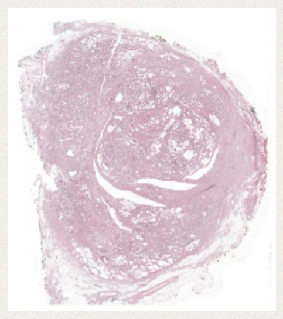
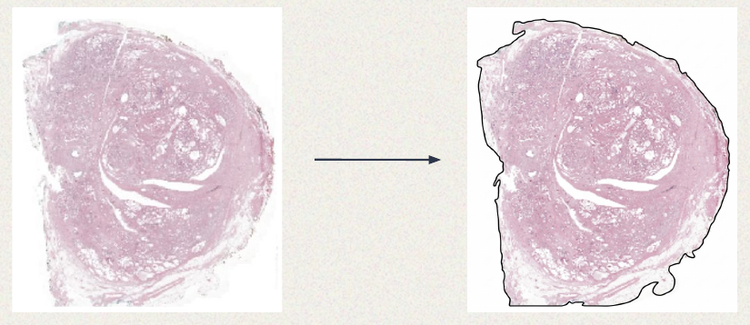
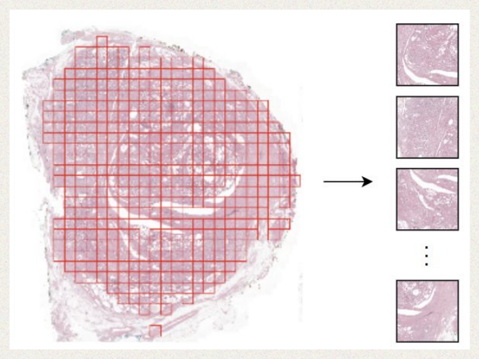
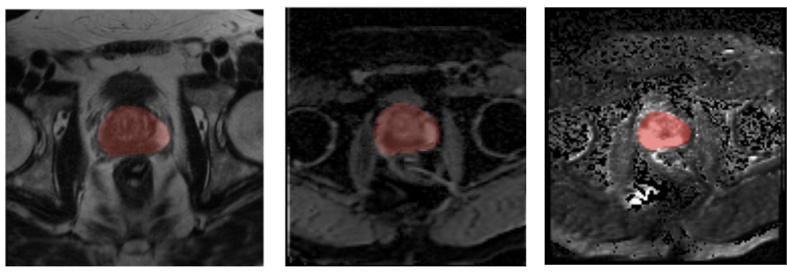

Turning Raw Scans and Records into Model Inputs
The dataset is the CHIMERA challenge's Task 1 cohort: ~95 prostate cancer patients, each with H&E whole-slide images, multiparametric MRI, and a structured clinical record, labeled for biochemical recurrence (BCR).
Task 1 asks a model to combine three inputs per patient — a T2-weighted MRI scan, an ADC map, and a high-b-value diffusion scan (all part of the same mpMRI exam), a 3D whole-slide pathology scan, and a structured clinical record — and predict whether biochemical recurrence will occur. Each modality passes through its own pretrained encoder before the resulting representations are combined and mapped to a recurrence prediction.
Environment Setup
Set up the project environment with
uv. A single
uv sync installs everything the whole course needs — including
openslide-bin, which bundles a prebuilt OpenSlide C library so WSI reading needs no
system-level install — then register the environment as a Jupyter kernel for notebooks 01+:
curl -LsSf https://astral.sh/uv/install.sh | sh # if uv isn't installed yet
git clone https://github.com/yws0322/minicourse-multimodal.git
cd minicourse-multimodal
uv sync # resolve + install into .venv/
uv run python -m ipykernel install --user \
--name minicourse-multimodal --display-name "minicourse-multimodal (uv)"Downloading the Dataset
CHIMERA
Task 1 is hosted on a public, no-sign-required S3 bucket, so no credentials or challenge
registration are needed to pull it — only the AWS CLI
(uv pip install awscli if you don't have it):
aws s3 sync --no-sign-request s3://chimera-challenge/v2/task1/ data/raw/task1/The full training cohort is ~95 patients and several GB — more than a tutorial pass needs. To grab a small real subset instead, name-filter the sync by patient ID:
aws s3 sync --no-sign-request s3://chimera-challenge/v2/task1/ data/raw/task1/ \
--exclude "*" \
--include "*1003*" --include "*1010*" --include "*1011*" --include "*1021*" --include "*1025*"clinical_data/, pathology/images/, and
radiology/images/ exist under data/raw/task1:
mkdir -p data/raw
ln -s /path/to/existing/chimera/task1 data/raw/task1Folder Structure
task1/
├── clinical_data/ # one JSON per patient
├── pathology/
│ └── images/{patient_id}/{patient_id}_{slide}.tif # 195 slides, H&E, SVS/TIFF
└── radiology/
└── images/{patient_id}/{patient_id}_0001_{t2w,adc,hbv,mask}.mhaPatients contribute a variable number of whole-slide images — anywhere from 1 to 12 slides each — so slide count, not patient count, is the true unit of the pathology data.
Whole Slide Images
- 195 images total (multiple slides per patient)
- H&E stained
- SVS / pyramidal TIFF format, gigapixel resolution

Step 1 · Tissue Detection
A WSI is mostly empty background glass — before extracting patches, we first need a mask of where the actual tissue is:
- Read a thumbnail — load the WSI at low magnification.
- Grayscale conversion.
- Otsu threshold — automatically pick the threshold that best separates the bimodal histogram of tissue vs. background.
- Morphological operations — dilation and erosion to close small holes in the tissue mask.
- Upscale the mask — from thumbnail resolution back up to full WSI resolution.

Step 2 · Patch Extraction (Tiling)
- Patch size: 224×224 (matches the WSI encoder's expected input — see Model Architecture)
- Stride: non-overlapping
- Tissue coverage filter: for each candidate patch, compute the fraction of pixels inside the tissue mask, and discard it if coverage < 20%
def extract_patch_coords(
wsi_path, tissue_mask_path=None,
patch_level=0, patch_size=224, patch_stride=224, min_tissue_ratio=0.2,
):
"""Find top-left (x, y) coordinates of tissue-containing patches in a WSI."""
slide = openslide.OpenSlide(str(wsi_path))
width, height = slide.level_dimensions[patch_level]
tissue_mask = np.array(Image.open(tissue_mask_path).convert("L")) if tissue_mask_path else None
coords = []
for y in range(0, height - patch_size + 1, patch_stride):
for x in range(0, width - patch_size + 1, patch_stride):
if tissue_mask is not None:
scale_x = tissue_mask.shape[1] / width
scale_y = tissue_mask.shape[0] / height
mx, my = int(x * scale_x), int(y * scale_y)
mw, mh = max(1, int(patch_size * scale_x)), max(1, int(patch_size * scale_y))
region = tissue_mask[my:my + mh, mx:mx + mw]
if region.size == 0 or (region > 0).mean() < min_tissue_ratio:
continue
coords.append((x, y))
slide.close()
return np.array(coords, dtype=np.int64)notebooks/01_data_preparation.ipynb — Step 4

Toolbox
A few open-source libraries cover most of this pipeline in practice — this course implements tissue detection and tiling directly with OpenSlide so every step stays visible, but these are worth knowing:
CLAM
End-to-end WSI pipeline (tissue segmentation, patching, feature extraction, and attention-based MIL classification) built for computational pathology, from the Mahmood Lab.
TRIDENT
A more recent slide-processing toolkit focused on fast tissue segmentation and patch feature extraction with modern foundation models (e.g. UNI, H-optimus-0).
TIAToolbox
A general-purpose computational pathology toolbox from the TIA Centre — slide I/O, tissue masking, patch extraction, and a library of pretrained models for common WSI tasks.
OpenSlide
The underlying C library (and Python bindings) most of the above are built on — reads
pyramidal whole-slide formats (SVS, TIFF, MRXS, ...) and provides thumbnail/region access
at any magnification level. This course uses it directly, via the pure-Python
openslide-bin wheel.
mpMRI
Each patient has 3 sequences per scan:
- T2W — T2-weighted anatomical imaging. Shows prostate zonal anatomy and tumor location/extent — the structural reference the other two sequences are read against.
- ADC — apparent diffusion coefficient map, sensitive to tissue cellularity. Lower values mean more restricted water diffusion, which correlates with denser, more aggressive tumor tissue.
- HBV — high-b-value diffusion-weighted imaging, the third channel the MRI encoder expects. Suppresses normal-tissue signal so the tumor stands out with higher conspicuity, which helps catch small or subtle lesions.
Most scans also ship a prostate segmentation mask, used to crop each volume down to the relevant anatomy before it reaches the model.

mpMRI Preprocessing
Each series goes through the same pipeline before feature extraction:
- Mask-guided crop — crop the volume to the bounding box of the prostate mask.
- Resample — resize (trilinear interpolation) to a fixed
(16, 200, 200)volume. - Histogram equalization — per-slice, to normalize contrast across scanners.
- Min-max then z-score normalization, computed over the masked region only.
def preprocess_mri_scan(mri_path, mask_path=None, img_size=(16, 200, 200)):
data = sitk.GetArrayFromImage(sitk.ReadImage(str(mri_path))).astype(np.float32)
if mask_path and Path(mask_path).exists():
mask_data = sitk.GetArrayFromImage(sitk.ReadImage(str(mask_path)))
nonzero = np.nonzero(mask_data > 0)
(z0, z1), (y0, y1), (x0, x1) = [(a.min(), a.max() + 1) for a in nonzero]
data = data[z0:z1, y0:y1, x0:x1] # crop to prostate mask bounding box
data = resample_to(data, img_size) # trilinear interpolation
data = histogram_balance(data, gray_level=65535)
data = min_max_normalize(data) # -> [-1, 1] over the masked region
data = z_score_normalize(data) # zero mean, unit variance
return to_tensor(data) # (1, D, 3, H, W), channel repeated for the ViTnotebooks/02_feature_extraction.ipynb — Step 2 (see Model Architecture for how this feeds the MRI encoder)
Clinical Data
Each patient's clinical record is a JSON of structured fields: demographics, Gleason scores, ISUP grade, PSA, staging, prior therapy, and pathology findings.
Clinical Data Preprocessing
Every patient needs a fixed-length, fixed-order feature vector, so categorical fields are one-hot encoded and numeric fields pass through directly:
FEATURE_ORDER = [
"age_at_prostatectomy", "primary_gleason", "secondary_gleason",
"tertiary_gleason", "ISUP", "pre_operative_PSA", "pT_stage_numeric",
"earlier_therapy_none", "earlier_therapy_cryo", "earlier_therapy_hormones",
"positive_lymph_nodes_0", "positive_lymph_nodes_1", "positive_lymph_nodes_x",
"capsular_penetration_0", "capsular_penetration_1", "capsular_penetration_x",
"lymphovascular_invasion_0", "lymphovascular_invasion_1", "lymphovascular_invasion_x",
"positive_surgical_margins_0", "positive_surgical_margins_1", "positive_surgical_margins_x",
] # 22 features total -- every patient gets exactly this vector layout
def preprocess_clinical_data(data: dict) -> np.ndarray:
"""Convert one patient's clinical dict into a FEATURE_ORDER-shaped float32 vector."""
item = dict(data)
if "pT_stage" in item:
digits = "".join(filter(str.isdigit, str(item["pT_stage"])))
item["pT_stage_numeric"] = float(digits) if digits else 0.0
if "earlier_therapy" in item:
therapy = item["earlier_therapy"]
item["earlier_therapy_none"] = float(therapy == "none")
item["earlier_therapy_cryo"] = float(therapy == "radiotherapy + cryotherapy")
item["earlier_therapy_hormones"] = float(therapy == "radiotherapy + hormones")
for field in ONE_HOT_BINARY_FIELDS: # lymph nodes, capsular penetration, LVI, margins
value = str(item.get(field, "")).lower().strip()
is_0, is_1 = value in ("0", "0.0"), value in ("1", "1.0")
item[f"{field}_0"], item[f"{field}_1"], item[f"{field}_x"] = float(is_0), float(is_1), float(not is_0 and not is_1)
return np.array([float(item.get(name, 0.0)) for name in FEATURE_ORDER], dtype=np.float32)notebooks/01_data_preparation.ipynb — Step 3
Data Splits & Label Preparation
Labels come straight from the clinical JSON: BCR (event indicator) and
time_to_follow-up/BCR (time in months). A stratified train/test split keeps the
BCR event rate balanced across both sets, and stratified k-fold cross-validation folds are
assigned within the training set only:
train_df, test_df = train_test_split(
labels_df, test_size=0.2, stratify=labels_df["BCR"], random_state=42,
)
skf = StratifiedKFold(n_splits=5, shuffle=True, random_state=42)
train_df["fold"] = -1
for fold_idx, (_, val_idx) in enumerate(skf.split(train_df, train_df["BCR"])):
train_df.loc[train_df.index[val_idx], "fold"] = fold_idx
test_df["fold"] = -1 # held out, never used for cross-validationnotebooks/01_data_preparation.ipynb — Step 6